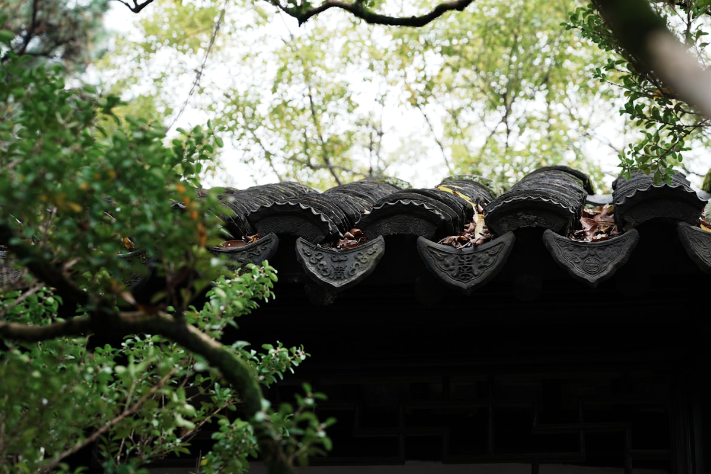
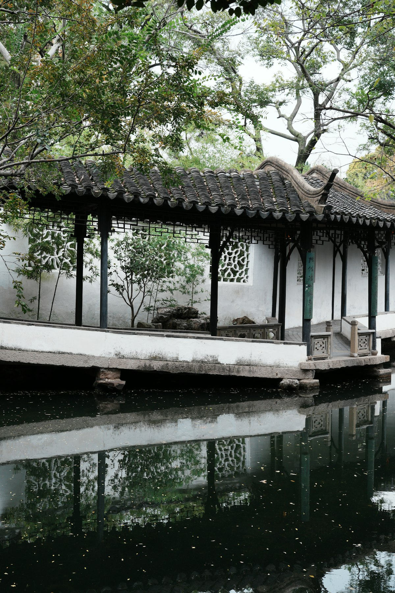
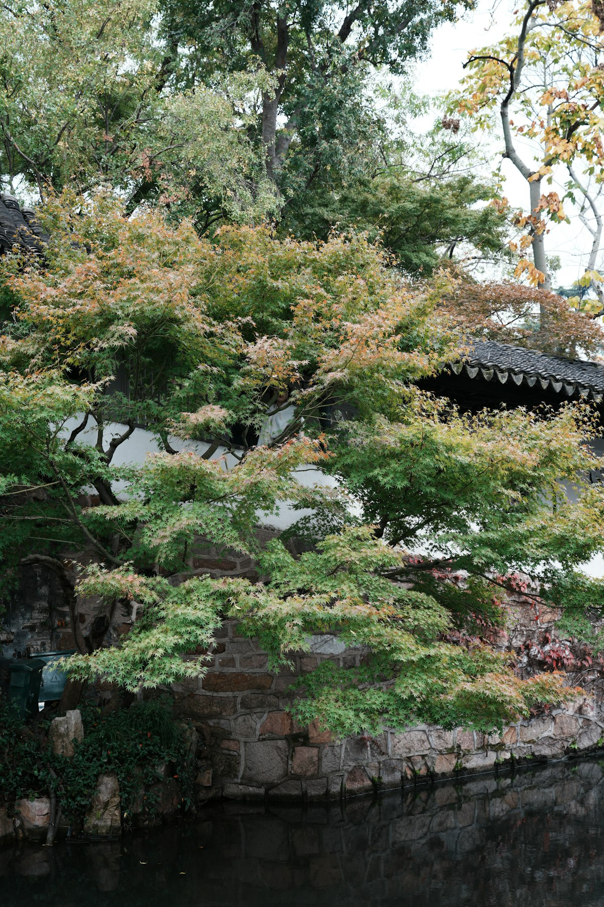

Classical Garden
Humble Administrator's Garden
拙政园
The largest and most renowned of Suzhou's classical gardens
History
Built in 1509 during the Ming Dynasty by Wang Xianchen, a dismissed imperial envoy. The name derives from a line in a classical text: "To plant trees and vegetables and sell them… this is the politics of a humble man."
Design Philosophy
The garden embodies the Taoist principle of harmony between humans and nature. Water occupies one-third of the space, creating a sense of openness rare in Suzhou gardens. The design emphasizes borrowed scenery and changing perspectives.

Eastern Garden
Originally a separate property, the Eastern Garden features densely planted vegetation and intimate courtyards. The Hall of Celestial Spring showcases the interplay of architecture and natural elements.

Central Garden
The heart of the garden centers on a large pond. Pavilions, bridges, and covered walkways frame ever-changing views. Each season brings new beauty—lotus in summer, falling leaves in autumn.

Western Garden
Added in the late Qing Dynasty, this section creates a more intimate atmosphere with smaller ponds and rocky landscapes. The 36 Pairs of Mandarin Ducks Hall exemplifies refined Ming architecture.